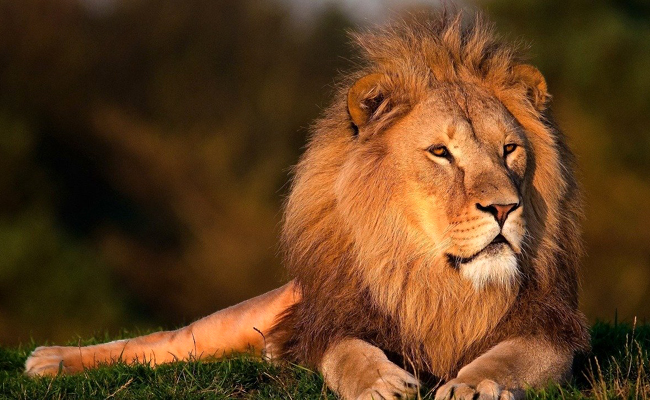
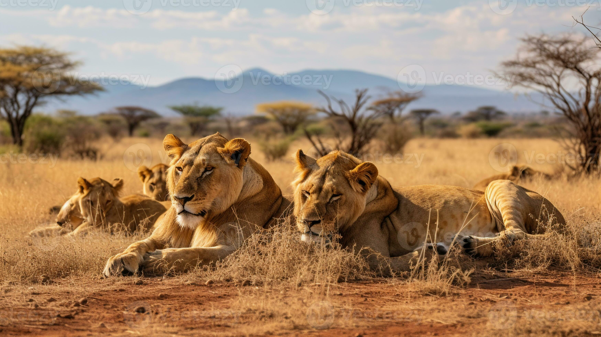

| Sujet |
déscription |
image |
| Caractéristiques Physiques |
Le lion, scientifiquement nommé Panthera leo, est l'un des plus grands félins du monde. Les mâles sont particulièrement reconnaissables grâce à leur imposante crinière qui varie en couleur de blond à noir, offrant une apparence majestueuse et distinctive. Les mâles peuvent mesurer entre 2,6 et 3,3 mètres de longueur, y compris la queue, et peser entre 150 et 250 kg. Les femelles, légèrement plus petites, mesurent entre 2,4 et 2,7 mètres et pèsent entre 120 et 180 kg. |
 |
| Habitat et Répartition |
Les lions habitent principalement les savanes et les prairies d'Afrique subsaharienne, avec une petite population de lions asiatiques vivant dans la forêt de Gir en Inde. Ils préfèrent les habitats ouverts où ils peuvent chasser efficacement en utilisant leur force et leur endurance. Les parcs nationaux tels que le Serengeti en Tanzanie et le Kruger en Afrique du Sud sont parmi les endroits où les populations de lions sont bien protégées. |
 |
| Comportement et Mode de Vie |
Contrairement à la plupart des autres félins, les lions sont des animaux sociaux qui vivent en groupes appelés "troupeaux". Un troupeau est généralement composé de plusieurs femelles apparentées, de leurs petits, et de quelques mâles adultes. Les mâles défendent le territoire et les membres du troupeau contre les intrus, tandis que les femelles coopèrent pour chasser et élever les petits. Les lions chassent principalement des grands herbivores comme les zèbres, les gnous et les buffles, utilisant des techniques de chasse coordonnées pour abattre leurs proies. |
 |